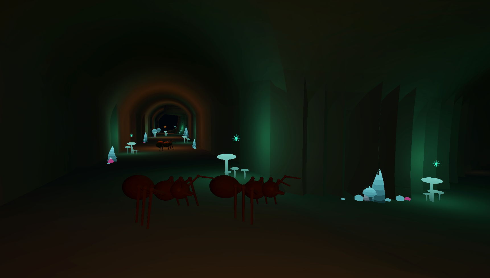
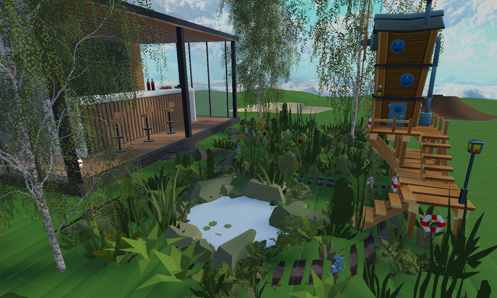
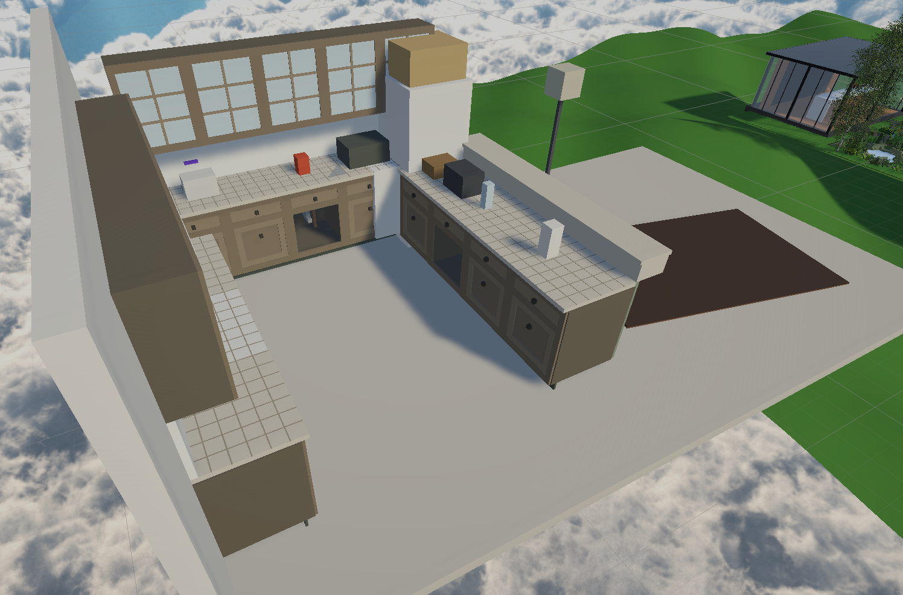
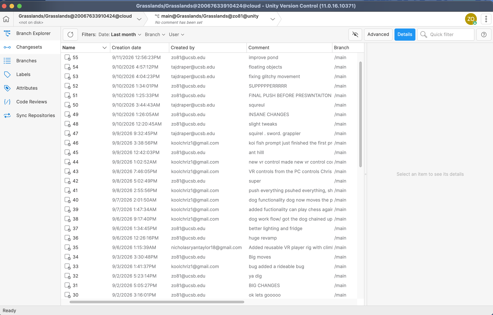
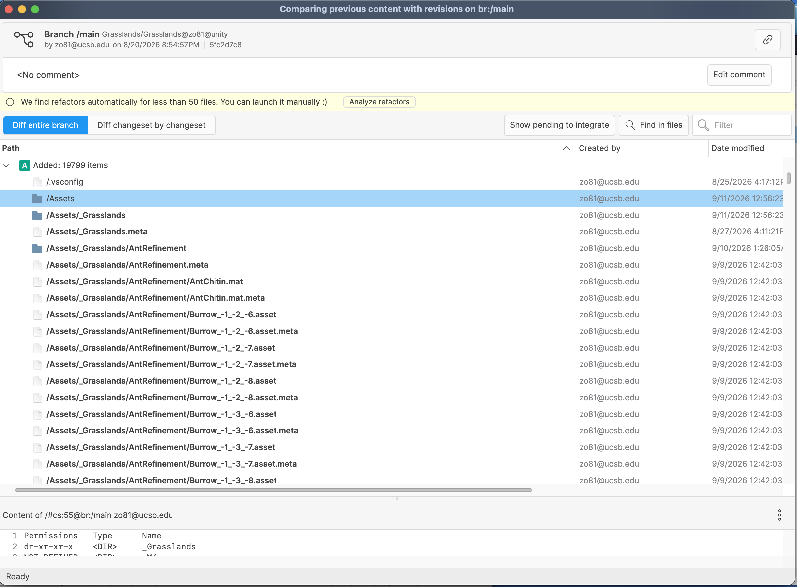

Grasslands: Tiny World


I worked on developing a Virtual Reality game using Unity engine. The player can explore the house and garden from the perspective of a bug sized person. It is open world with many interactions that the player comes across from walking around. Included are all surfaces being climbable, a knife that can be used to slay the evil squirrel and gain a grapple hook, an underground ant cave with a beetle mount given as a reward for finding and talking to the queen, a rainbow koi fish that drops a key used to unlock the chained dog, which can then be played in a game of chess, and much more!
History



